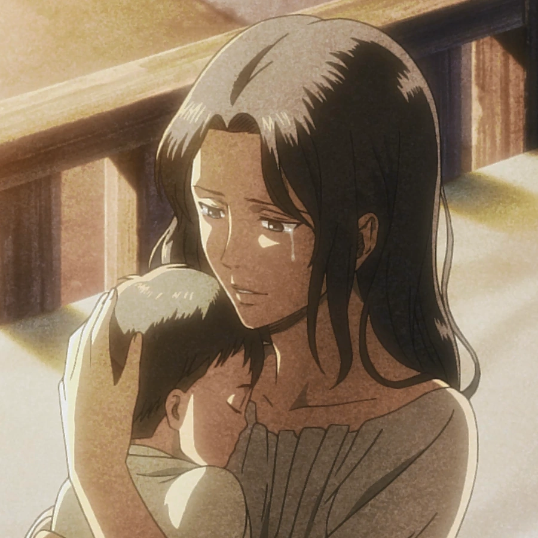
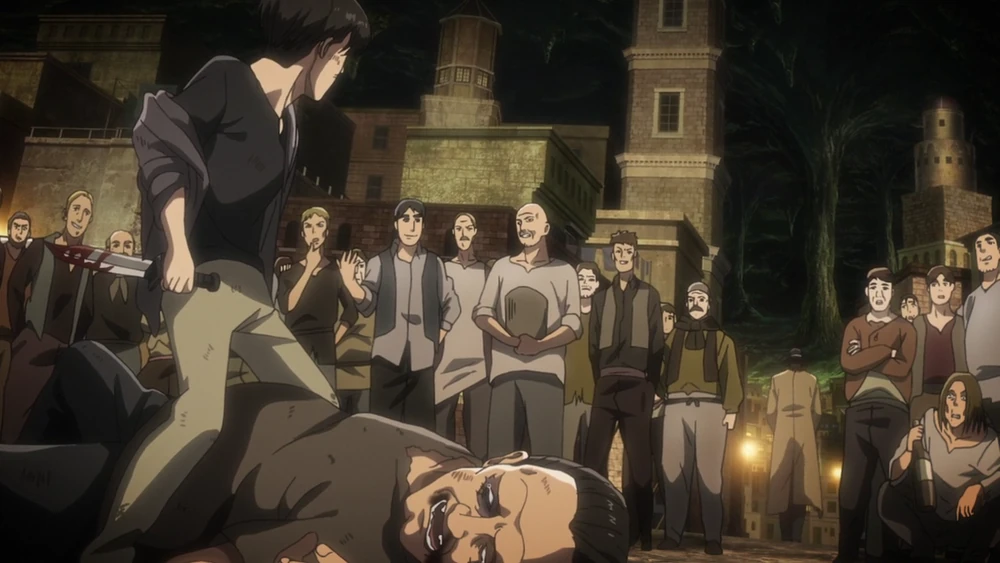

Леви — сын Кушель Аккерман от неизвестного клиента борделя.
Хотя Кенни и убеждал сестру бросить ребенка, она не послушала и решила сама воспитать сына.
Когда Кенни оказался на королевской службе, он разыскал сестру,
желая помочь ей, но было поздно - Кушель умерла в результате болезни.
Тогда Кенни взял опеку над Леви и в течение нескольких лет воспитывает его,
обучая многому из того, что знал сам о сражениях и выживании в подземном городе. Примечательно,
что лишь перед самой смертью Кенни Леви узнал, что это его дядя.

